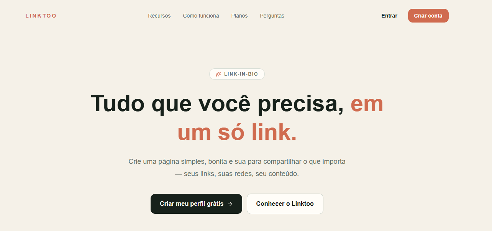
Em andamento
Linktoo
Plataforma de Bio Links para centralizar e compartilhar todos os seus links importantes em uma única página personalizável.
Juiz de Fora · Brasil
Mais de uma década construindo software, times e soluções — da rede e do chão de fábrica ao código, arquitetura e nuvem.
Sobre mim
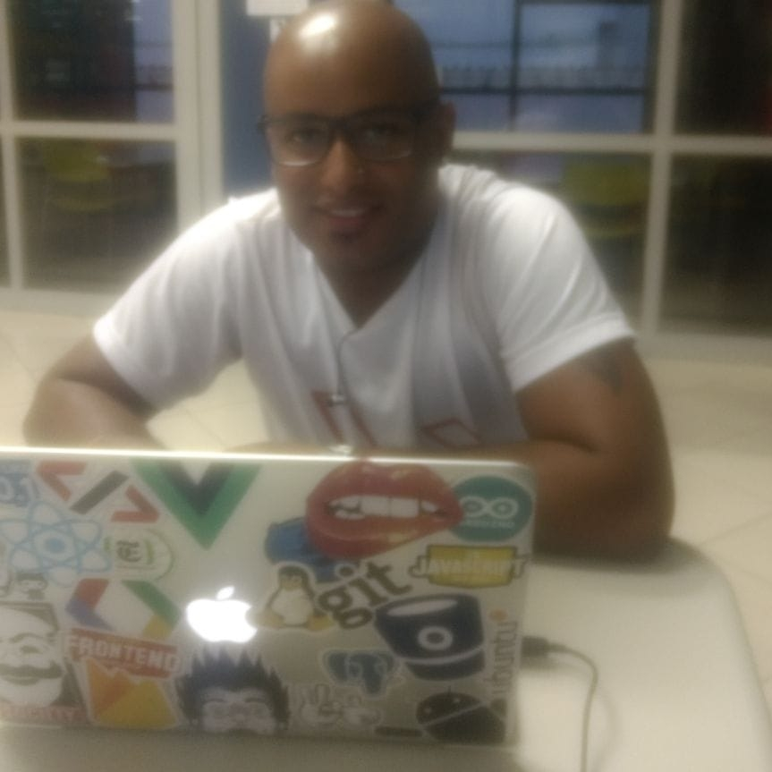
Opaa...Bem vindo! Sou da cidade de Juiz de Fora - MG, Programador, criador de Apps, professor voluntário e palestrante. Atualmente trabalhando como Analista de Sistemas responsável por uma Equipe de Sustentação. Fui desenvolvedor durante 5 anos na CTK Soluções, empresa que fundei com um amigo/sócio, que hoje presto alguns serviços como freelancer. Passo a maior parte do meu tempo na frente do computador, estudando novas tecnologias e criando coisas, ao fazer isso, me sinto motivado em ajudar pessoas com dicas e compartilhando meu conhecimento, e tudo isso só é possível com vários litros de Café por dia...rsrs
Habilidades
O mercado busca cada vez mais especialistas proativos, curiosos e que tenham visão de mercado. As empresas esperam que o profissional de TI conheça o negócio, e que utilize suas habilidades técnicas para encontrar soluções, diminuir custos, alavancar os lucros e garantir mais segurança nos procedimentos. Por isso os estudos nunca acabam, é preciso ficar atento às mudanças e se qualificar para novos desafios.
Minha história
Responsável pela equipe de sustentação e na criação de novas features na Squad Operação de Trens, nos principais sistemas de Operação na MRS.
Atuando no Desenvolvimento e manutenção de Softwares internos.
Atuando no CCO (Centro de Controle Operacional) como Operador de SISLOG, realizando o acompanhamento da circulação dos trens em toda a malha ferroviária, registrando informações relativas às movimentações dos trens (locomotivas e vagões) e inserção de eventos adversos para gerar base de dados para a tomada de decisão dos controladores e programadores na otimização da circulação e alimentando indicadores para verificação de possíveis gargalos no processo. Garantir as normas de segurança da informação, identificando as condições inseguras na formação das composições e fazendo o registro exato dos eventos realizados.
O Técnico em Meio Ambiente é o profissional responsável pelo levantamento e sistematização de dados, informações e documentos técnicos para subsidiar a realização de estudos socioambientais. Contribui no processo de elaboração de políticas ambientais, na implementação e controle de programas de gerenciamento ambiental e sistemas de gestão integrada. Atua em organizações públicas, privadas e não governamentais do comércio, serviços, indústria, consultoria, ensino e pesquisa, abrangendo instituições de assistência técnica, pesquisa e extensão rural, estações de tratamento de resíduos, empresas de licenciamento ambiental, unidades de conservação ambiental, cooperativas, associações, portos e aeroportos.
Desenvolvedor Fullstack, Javascript (React/React Native, Angular JS, Vue JS), Flutter, .Net, PHP Laravel, Ruby on Rails, soluções em Segurança da Informação, Design/Arte Finalista.
Muito além de criar sistemas, desenvolvedores devem dominar mais de uma linguagem, a fim de programar sistemas empregando também as chamadas linguagens auxiliares (a exemplo do Javascript quando utilizado como linguagem auxiliar ao HTML). Além disso, devem ser capazes de criar softwares tendo em vista a cadeia completa de desenvolvimento: concepção, implementação, operação e manutenção.
Seja um desenvolvedor insubstituível na era da IA. Soluções geradas com IA dependem de conhecimentos sólidos.
Curso destinado a graduados com conhecimentos em programação e tecnologia, e a profissionais de outras áreas que desejam adquirir habilidades e competências para atuar com soluções de arquitetura em Java. Atividades e grupos: Programação, Arquitetura.
Especialização com foco em técnicas de Inteligência Artificial e Machine Learning aplicadas ao desenvolvimento de soluções de software.
Aprofundamento em arquitetura de software, com foco em padrões arquiteturais, escalabilidade e boas práticas para projetar sistemas robustos e sustentáveis.
Muitos alunos consideram o curso Full Cycle mais enriquecedor do que uma pós-graduação pelo fato dele estar sempre refletindo as exigências do mercado, agregando na teoria e na prática o que realmente um dev precisa saber para evoluir na carreira.
Seu objetivo é garantir que a implementação esteja alinhada com a arquitetura definida e que o sistema esteja sendo construído de acordo com as melhores práticas. Além disso, o arquiteto de software é responsável por identificar e mitigar riscos relacionados à arquitetura do sistema.
Ampliar a compreensão de concepções acerca da gestão da qualidade de software, bem como refletir sobre as respectivas implicações para o exercício da profissão.
O bacharel em Sistemas de Informação é responsável pela administração do fluxo de informações nas redes de computadores de uma empresa. Ele desenvolve, implementa ou adapta softwares com o objetivo de melhorar a organização e acessibilidade das informações.
O analista de sistemas é um profissional da área de Tecnologia da Informação (TI) que analisa e desenvolve sistemas, mapeia processos, faz a modelagem de dados e levanta os requisitos para implementar esses programas de acordo com os objetivos e as regras de negócio da empresa contratante.
O Técnico em redes de computadores é o profissional que projeta a rede tanto na questão lógica quanto na física, também realiza a instalação, configuração e manutenção em redes de computadores, instala e configura roteadores e switchs. Faz a implementação e administração de sistemas operacionais em redes corporativas e residenciais.
O profissional Técnico em Meio Ambiente possui uma sólida base de conhecimentos tecnológicos, gerenciais e humanísticos, adaptando-se a novas situações, buscando incentivar e participar de todas as ações e projetos locais referentes a ações de preservação do meio ambiente, sensibilizar a sociedade empregando argumentação e dados concretos para a preservação e boa utilização dos recursos naturais, tendo sempre em vista o desenvolvimento sustentável, orientar empresas, instituições, escolas, etc., com relação à legislação ambiental, identificar situações de risco ambiental, intervir no sentido de minimizar toda situação de risco ambiental observada, acionando, se for o caso, o poder público e a sociedade de modo geral, auxiliar a aplicação e fiscalização da legislação ambiental, avaliar modelos de gestão ambiental utilizados na exploração de recursos naturais e nos processos produtivos, e elaborar e acompanhar a implementação de projetos de gestão e educação ambiental.
O técnico em Química é o profissional que pode realizar análises, operar processos e atuar no desenvolvimento de produtos e serviços da área química e gestão técnica dos processos, zelando por padrões de qualidade e pela integridade de pessoas, do meio ambiente e das instalações.
O que estou fazendo agora

Plataforma de Bio Links para centralizar e compartilhar todos os seus links importantes em uma única página personalizável.
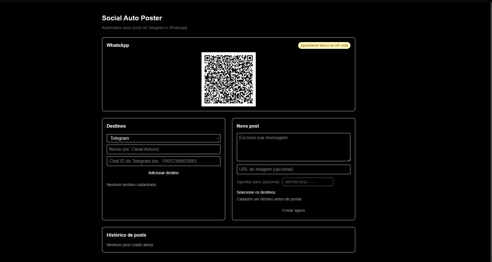
App para automatizar o envio e agendamento de posts no Telegram e WhatsApp a partir de um painel web único.
Trabalhos anteriores
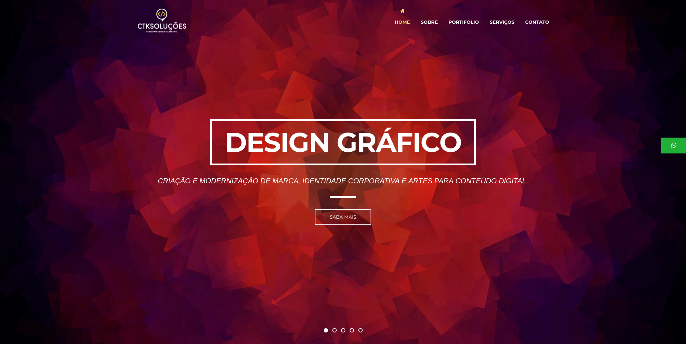
ctk Soluções em TI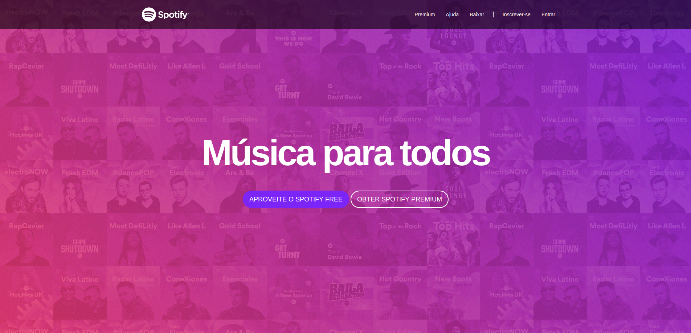
Spotify Clone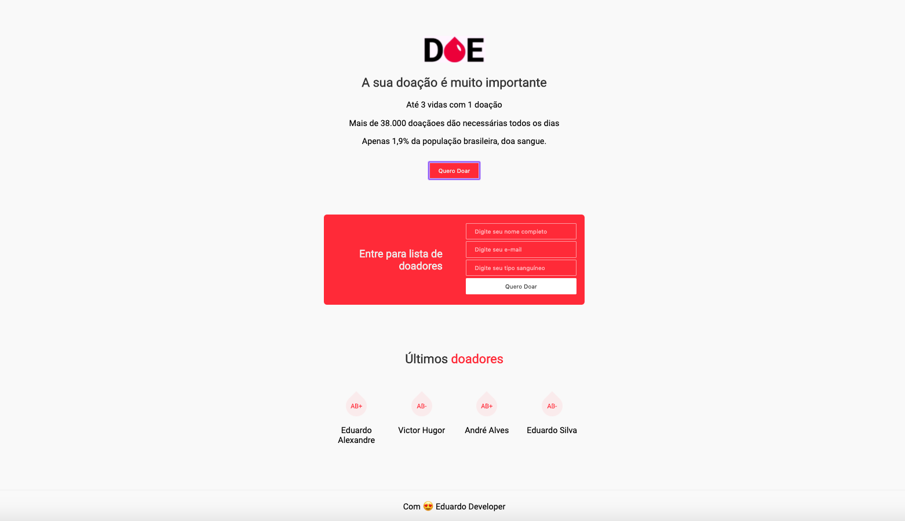
Doe Sangue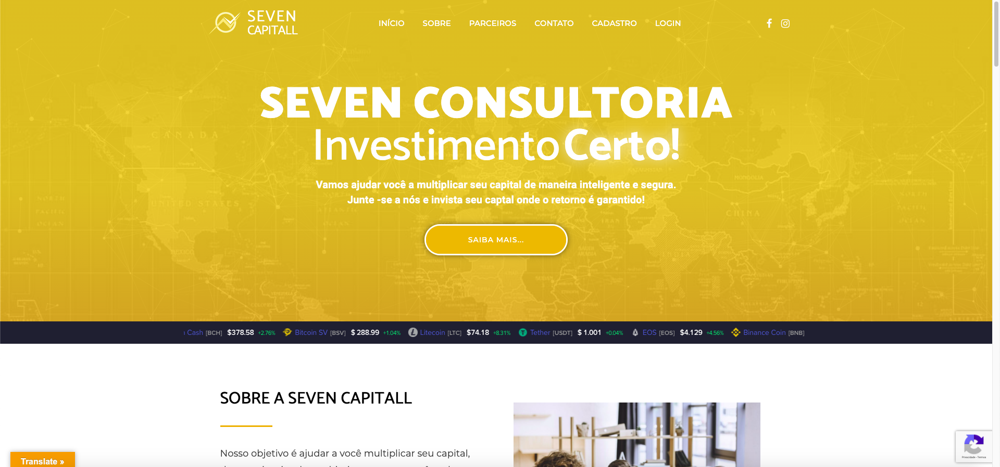
Seven Capital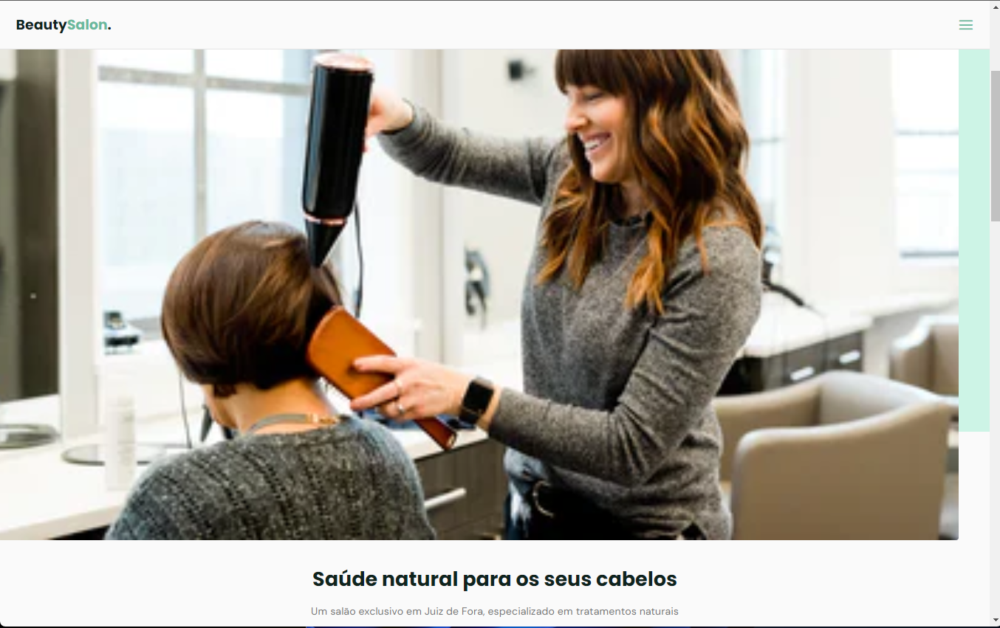
Salão de Beleza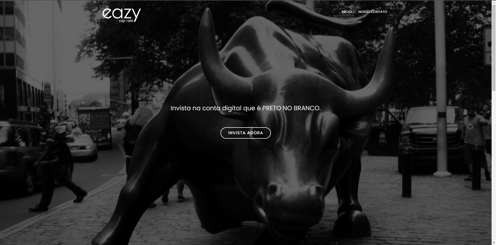
Eazy Caprate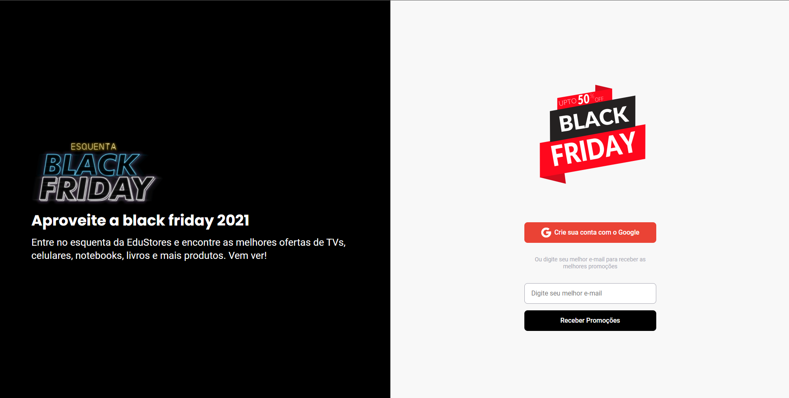
EduStore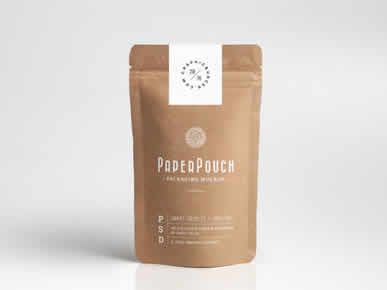
Projeto